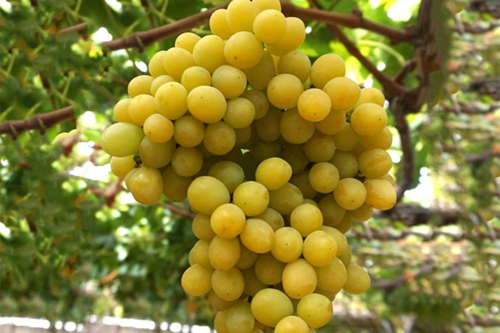

|
Anggur merupakan tanaman buah berupa perdu merambat yang termasuk ke dalam keluarga Vitaceae. Buah ini biasanya digunakan untuk membuat jus anggur, jelly, minuman anggur, minyak biji anggur dan kismis, atau dimakan langsung. Nama Latin : Vitis vinifera Asal Negara : Armenia Latin Manfaat :
|
||
Jenis-Jenis Buah Anggur |
||
|
Anggur Concord
|
Anggur Champagne |
Anggur Pinot Noir |
|
Anggur Black Muscat |
 Anggur Cotton Candy |
Anggur Sultana |